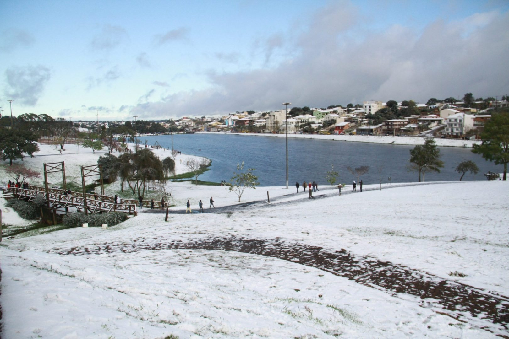

27Jun20h30
Standup & Mágica
Show de humor com mágica.

São 82 dias e mais de 100 eventos integrados pela cidade. Aqui você acompanha tudo — dos grandes destaques às festas julinas de bairro.
Escolha um tema para encontrar o que combina com você. A agenda é viva e cresce a cada semana.
Show de humor com mágica.
Mostra de danças.
Mostra de chorinho pela Orquestra de Câmara, em comemoração aos 8 anos do Teatro Municipal. Inscrição gratuita.
Encontro dos Museus e das Bibliotecas, com museus renomados em Guarapuava. A exposição permanece por seis meses (8h–12h e 13h30–17h30).
As comidas de inverno no centro da festa, com muita música. De 3 a 5 de julho.
Brechó de roupas femininas, calçados, acessórios e bijuterias. Também em 18/06, 25/06, 01/08, 08/08, 15/08 e 22/08.
Festival de vinhos, nos dias 8 e 9 de julho.
As cervejarias artesanais reunidas para celebrar a Capital Nacional da Cevada e do Malte. Estilos premiados e muita música. Dias 11 e 12 de julho.
Musical infantil. Ingresso solidário com 1 kg de alimento dá desconto.
Tributo ao ABBA. Ingresso solidário com 1 kg de alimento dá desconto.
Corrida de rua. 50% de desconto para 60+ e PCD; categoria Kids gratuita (70 vagas).
De 13 de julho a 14 de agosto, de segunda a sexta-feira. Entrada gratuita.
Atividades de férias para a criançada, em 13 e 14 de julho. Inscrições gratuitas.
Homenagem a nomes da música gaúcha, com cultura, música e turismo.
BMX, bikes urbanas, manobras, exposição, música e confraternização. Sábado e domingo.
Atividades de BMX e cultura da bicicleta urbana, com comidas típicas. No domingo, encontro aberto de BMX.
Ação filantrópica.
Um dos grandes shows da temporada.
Congresso jurídico com Baile do Rubi, nos dias 7 e 8 de agosto.
Contações de histórias, peça de teatro, bate-papos com autores e feira do livro. De 12 a 14 de agosto. Gratuito e aberto ao público.
Programação nos dias 13, 14 e 15 de agosto.
Contação de história com a artista e bibliotecária Débora Oliveira.
Também com programação em 21 de agosto, no Eventos Agrária.
Gastronomia, cultura e turismo, com arrecadação para obras sociais.
Gastronomia e música em clima de inverno.
Jornada Educatech nos dias 2 e 3 de setembro, com cultura, palestras e atividades infantis.
Programação dedicada à melhor idade, nos dias 18 e 19 de setembro.
14ª edição, com jantar, chopp, show ao vivo, DJ, brindes, prêmios e ação social. Compra na Loja Jo Modas ou pelo site Show Ingressos.
Novas atrações entram na agenda ao longo das semanas. Acompanhe os perfis oficiais e fique por dentro de cada detalhe.